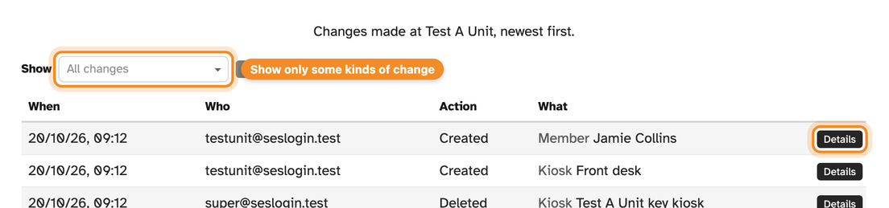

See who changed what, and when
SES Activity now keeps an Audit log for your unit: a
record of every change made, newest first. Activity entries added,
edited or deleted, members added or changed, kiosks set up or removed
— it's all there, so you never have to wonder how an entry ended
up the way it is.
-
Who, what and when. Each row shows when the change
was made, who made it, what they did (such as Created, Updated or
Deleted) and what it was made to.
-
Exactly what changed. Press Details
on any row to see which fields changed, from what to what — for
example, a sign-out time that was corrected.
-
Automatic changes too. Changes made by SES Activity
itself, such as the daily update of your member list from SES, show
what made them instead of a person's email address.
-
Filter to what you need. Use Show to
pick one or more kinds of change, such as only activity entries or only
kiosks.

The audit log, newest change first. Names are examples.
To open it, log in to SES Activity and choose Audit log
from the menu.
Also new: the Read only role
Want to give someone access to your unit without letting them change
anything? There's now a Read only role alongside Admin.
A Read only user can see the dashboard, activity, reports, members and
the audit log, download spreadsheets and get the daily email summary,
but can't add, edit or delete anything. It suits anyone who needs to
keep an eye on your unit's activity without managing it.
Want us to add someone, as an Admin or Read only? Reply
to this email, or submit a ticket using the
Help/Feedback? link at the bottom of any page on the
admin site. Let us know the unit, each person's email address, and
whether they should be Admin or Read only.
|
|
Questions, problems or feedback? Just reply to this email.
Your reply opens a support ticket with the SES Activity team, so you can
report an issue, tell us what you think of a change, or ask for help, and
we'll get back to you.
Thanks for everything you do for your unit.
|